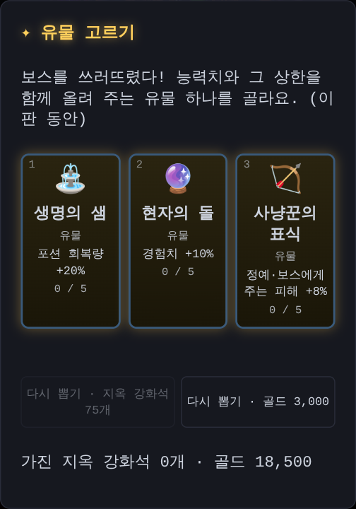
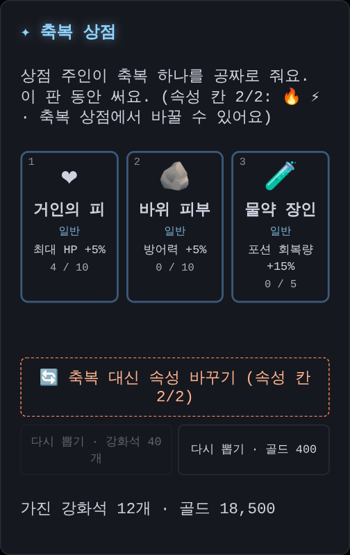
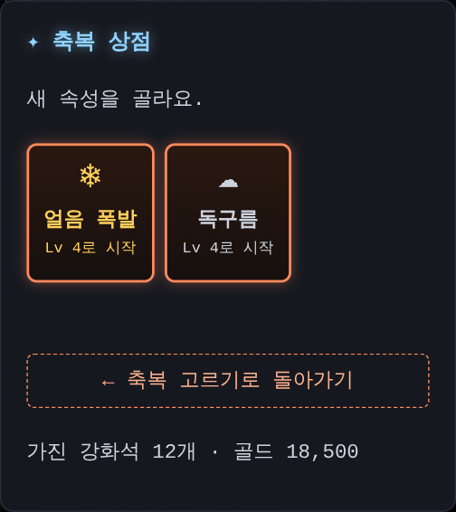
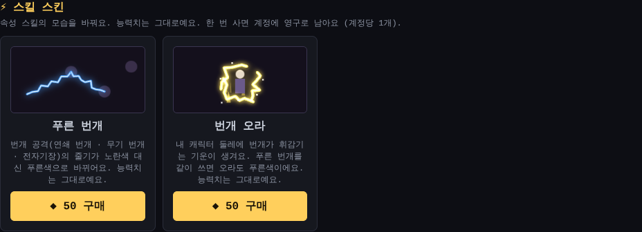
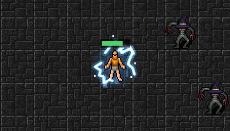
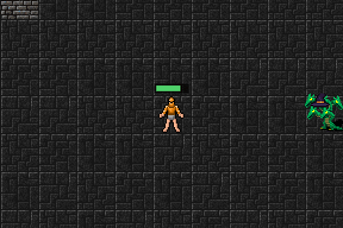

유물이 바닥나지 않게, 헬에서도 레벨 업
오랜만에 한 판을 길게 하다가 헬 5층에서 두 가지가 눈에 띄었어요. 보스를 잡으면 나오는 유물이 2개뿐이고, 헬에 왔는데도 레벨이 39에서 멈춰 있었어요.
유물이 바닥났어요
유물은 8가지였고, 같은 유물은 3번까지 고를 수 있었어요. 다 합쳐 24번이에요. 보스는 5층마다 나오니까, 일반과 나이트메어를 깨면 벌써 20번이고 헬 5층 보스가 21번째예요. 남은 유물이 둘뿐이라 다시 뽑아도 같은 둘만 나왔어요.
그래서 이렇게 바꿨어요.
- 같은 유물은 5번까지 골라요 (속성 저항 넷은 3번 그대로)
- 새 유물 넷을 더했어요
- 📕 마도서 조각: 스킬 피해 +6%
- 🏹 사냥꾼의 표식: 정예·보스에게 주는 피해 +8%
- 🔮 현자의 돌: 경험치 +10%
- ⛲ 생명의 샘: 포션 회복량 +20%
이제 유물은 모두 열두 가지, 52번이라 헬 50층까지 가도 고를 게 남아요.

헬에서 레벨이 멈췄던 이유
다음 레벨까지 필요한 경험치는 레벨마다 1.3배씩 늘어요. 그런데 몬스터 경험치는 나이트메어 1층부터 헬 50층까지 거의 그대로였어요. 그래서 헬에서는 한 레벨 올리는 데 100층쯤 걸렸고, 2레벨마다 받는 축복도 끊겼어요.
이제 나이트메어와 헬은 깊이 갈수록 몬스터 경험치가 늘어나요. 나이트메어 50층은 1층의 약 4배, 헬 50층은 거기서 또 약 5배예요. 시뮬레이션에서는 헬을 끝낼 때 레벨이 39에서 46쯤으로 올라요. 레벨이 오르는 동안 축복도 다시 받아요.
그만큼 몬스터도
유물이 늘고 레벨이 오르니 모든 던전이 꽤 쉬워졌어요 (끝까지 가는 비율 일반 74%, 나이트메어 90%, 헬 100%). 그래서 몬스터를 다시 조금씩 세게 맞췄어요. 이제 끝까지 가는 비율은 일반 약 60%, 나이트메어 약 70%, 헬 약 50%예요.
다 모으는 게임에서 고르는 게임으로
유물 문제를 고치고 나니 더 큰 걱정이 남았어요. 축복은 다 합쳐 183번이면 전부 끝까지 올라가는데, 층마다 하나씩, 2레벨마다 하나씩, 축복 상점까지 받으면 헬 후반에는 전부 모여요. 결국 무엇을 골라도 마지막엔 똑같아져요.
처음에는 층 축복을 줄이기만 하면 될 줄 알았어요. 그런데 시뮬레이션으로 해 보니 축복이 적어지면 네 속성을 모두 조금씩 찍는 게 압도적으로 셌어요. 속성 스킬은 Lv 1만 찍어도 스킬이 하나 생기니까요. 정답이 하나면 고르는 재미는 없어요.
속성 칸 2개
그래서 한 판에 속성은 두 가지까지로 정했어요. 처음 고른 두 속성이 그 판의 속성이 되고, 그 다음에는 다른 속성 카드가 나오지 않아요. 어떤 두 속성을 고르느냐가 곧 어떤 융합 스킬을 노리느냐가 돼요.
마음이 바뀌면 바꿀 수도 있어요. 축복 상점에서 공짜 축복 대신 속성 바꾸기를 고르면 돼요. 올려 둔 단계는 절반만 새 속성으로 옮겨 가요 (화염구 Lv 8 → 새 속성 Lv 4). 그 속성이 들어간 융합 스킬은 사라지니 신중하게요.


층마다 받던 축복은 3층마다로 줄였어요. 레벨 업 축복과 축복 상점은 그대로예요. 이제 헬까지 받는 축복은 전체의 절반쯤이라 다 모을 수 없어요.
조합끼리 맞추기
속성 칸을 넣고 보니 이번에는 얼음이 든 조합만 셌어요. 얼음 폭발이 몰려오는 몬스터를 모두 느리게 만들어서, 몬스터가 많은 이 게임에서는 효과가 너무 컸거든요.
- 얼음 폭발의 느려짐은 이제 확률로 걸려요 (단계가 오를수록 올라가요)
- 화염구·연쇄 번개·독구름과 불꽃 번개·독가스 점화·신경독은 더 세졌어요
그 결과 처음부터 헬 50층까지 가는 비율이 조합마다 5~62%로 벌어져 있던 게 13~33%로 모였어요. 그래도 조합마다 잘하는 곳은 달라요. 얼음+독과 번개+독은 헬에서, 얼음+번개는 일반 던전에서 특히 강해요.
상점이 바뀌었어요: 스킬 스킨
이제 이 게임은 장비를 모으는 게임이 아니라 한 판 한 판 축복과 속성을 고르는 게임이 됐어요. 그래서 상점의 장비 상자와 고대 유니크 선택 상자는 더 팔지 않아요. 대신 캐시로 스킬 스킨을 살 수 있어요. 스킨은 능력치를 바꾸지 않고 모습만 바꿔요.
먼저 두 가지를 만들었어요. 둘 다 캐시 50개이고, 한 번 사면 계정에 계속 남아요.
- 푸른 번개: 연쇄 번개처럼 번개로 공격할 때 줄기가 노란색 대신 파란색이에요.
- 번개 오라: 내 캐릭터 둘레에 번개가 휘감기고 기운이 위로 솟아요. 푸른 번개와 같이 쓰면 오라도 파래요.


산 스킨은 처음부터 바로 써져요. 게임 인벤토리의 꾸미기에서 쓰고 벗을 수 있어요. 예전에 산 장비 상자와 고대 유니크 선택 상자는 지금처럼 우편함에서 받을 수 있어요.
점프 공격이 잘 보이게
나이트메어부터 나오는 몬스터 일부는 점프 공격을 해요. 내가 가는 길 앞을 노려 뛰어내리는 기술인데, 보라색 표시만 보이고 몬스터가 뛰는 모습은 거의 안 보였어요. 그래서 이렇게 바꿨어요.
- 뛰기 전에는 몬스터가 몸을 낮추고 부르르 떨어요. 발밑에 보라 기운이 생기고 머리 위에 ⤒ 표시가 떠요.
- 떨어질 때는 큰 포물선을 그리며 날아가서 노린 자리에 쿵 떨어져요. 땅에는 그림자가 따라가요.
- 실시간 화면에서는 기다리는 동안 내가 계속 걸어가서, 몬스터가 늘 내 뒤에 떨어졌어요. 이제는 그만큼 더 앞을 노려요. 가던 길을 그대로 가면 맞으니, 보라 표시가 보이면 방향을 바꾸거나 회피하세요.
